原始文档展示
Zabbix 添加监控设备和路由器日志获取操作记录
Zabbix 添加监控设备和路由器日志获取操作记录
一、Windows 主机添加 Zabbix Agent
步骤 1：确认 Zabbix Server 版本
当前 Zabbix Server 版本为 7.4.0。客户端 Agent 建议选择相同大版本 7.4.x，避免版本差异导致模板、主动检查或兼容性问题。
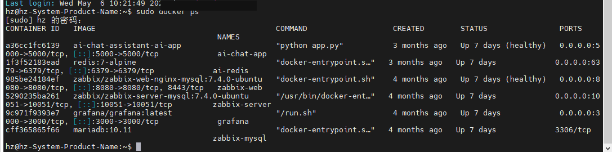
步骤 2：下载 Windows 客户端 Agent
访问 Zabbix 官方 Agent 下载页面，按服务器版本、操作系统类型和 CPU 架构选择安装包。
https://www.zabbix.com/download_agents
本次选择与服务端 7.4.x 对应的 Windows Agent 版本。
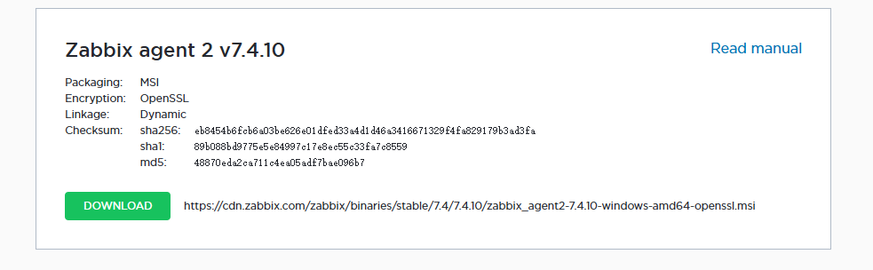
步骤 3：安装 Windows 客户端
目标 Windows 主机 IP：[RPA_HOST_IP]。安装时重点填写 Zabbix Server 地址、主机名和监听端口。主机名建议与 Zabbix Web 中添加的主机名保持一致。
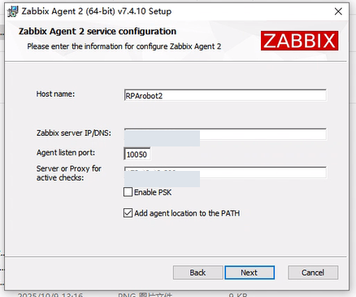
步骤 4：启动并检查 Agent 服务
安装完成后确认 Zabbix Agent 服务已启动。成功标准：服务状态为运行中，且 Windows 防火墙或安全策略允许 10050 端口通信。
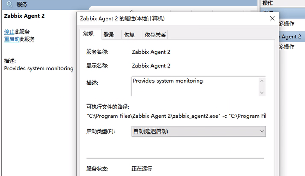
步骤 5：在 Zabbix Web 添加客户端主机
进入 Zabbix Web 控制台，添加主机信息，配置主机组、接口 IP 和模板。Windows 主机通常关联 Windows by Zabbix agent 相关模板。
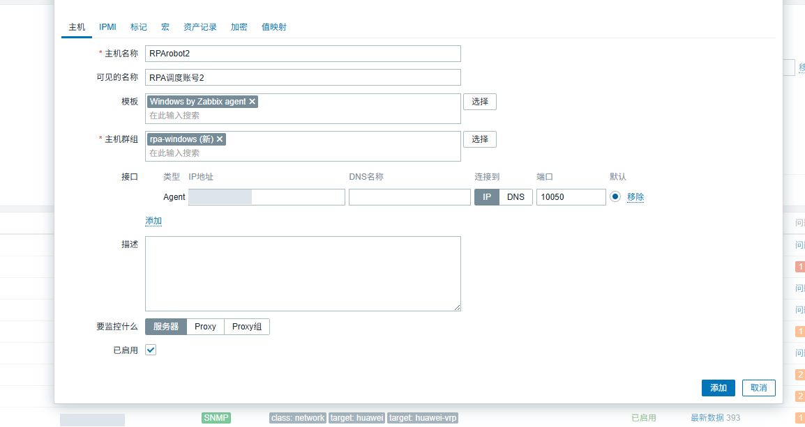
步骤 6：确认多台 Windows 主机添加完成
本次共添加 4 台 Windows 主机。成功标准：主机列表中状态正常，接口可用性变为绿色，最新数据中能看到 CPU、内存、磁盘等监控项。
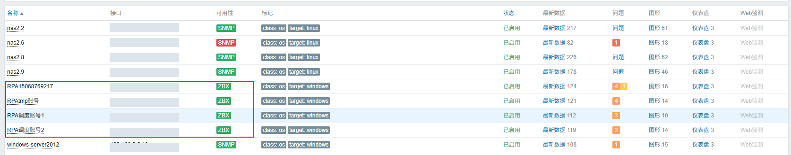
二、MySQL 服务器安装 Zabbix Agent 2
步骤 1：确认目标服务器
目标 MySQL 服务器 IP：[MYSQL_SERVER_IP]。该服务器采用 Linux 环境，安装 Zabbix Agent 2，用于后续采集系统指标和 MySQL 相关监控数据。
步骤 2：下载 Zabbix Release RPM
根据 Linux 发行版和 Zabbix 版本下载对应的 zabbix-release RPM 包，用于配置 Zabbix 官方 YUM 源。
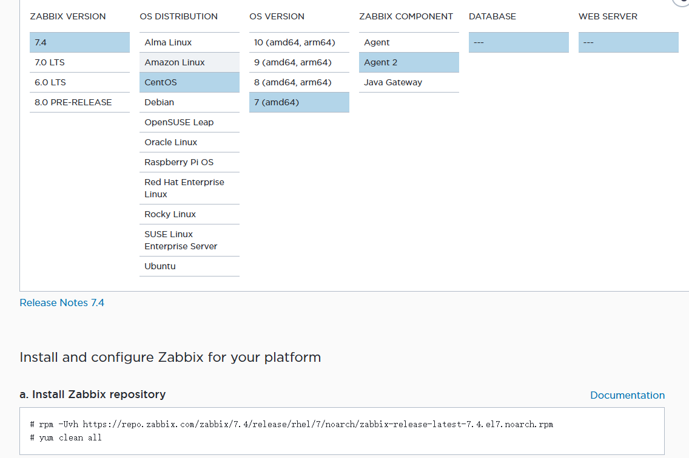
步骤 3：处理无法直接下载 RPM 的情况
由于虚拟机环境无法直接更新或下载 RPM，本次采用手动上传 RPM 包的方式处理。上传后再在服务器本地安装。
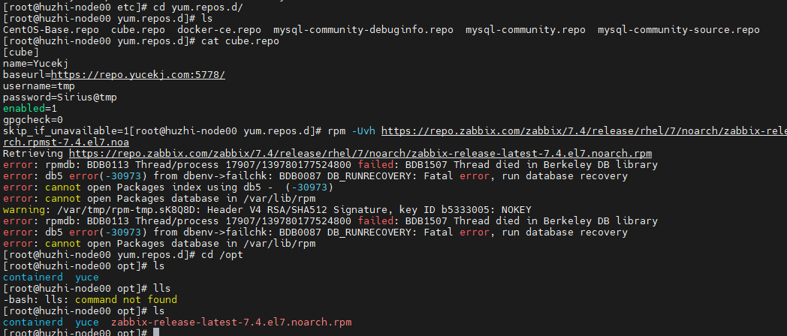
步骤 4：备份并修复 RPM 数据库
如果安装 RPM 时出现数据库锁、RPM 数据库损坏或依赖源异常，先备份当前 RPM 数据库，再尝试修复。生产环境执行前建议保留命令输出，便于回滚和排查。
操作目标：降低 RPM 数据库异常对后续安装的影响。
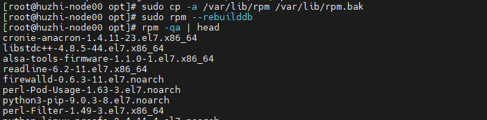
步骤 5：清理 YUM 缓存并重新生成缓存
修复后清理 YUM 缓存，重新生成缓存，确保系统能识别新的 Zabbix 软件源。
sudo yum clean allsudo yum makecache然后安装 Zabbix release RPM，并验证 YUM 源是否生效。
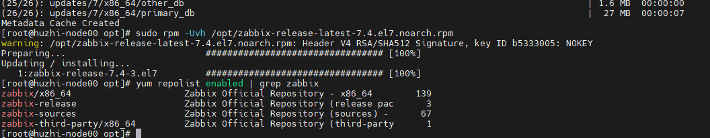
步骤 6：安装 Zabbix Agent 2
安装 Agent 2。Agent 2 更适合后续扩展数据库、插件类监控场景。
sudo yum install zabbix-agent2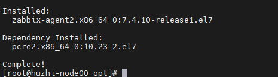
步骤 7：修改 Agent 2 配置文件
编辑配置文件，重点检查 Server、ServerActive、Hostname 等参数。Hostname 建议与 Zabbix Web 中添加的主机名一致。
vim /etc/zabbix/zabbix_agent2.conf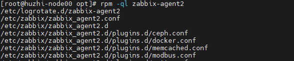
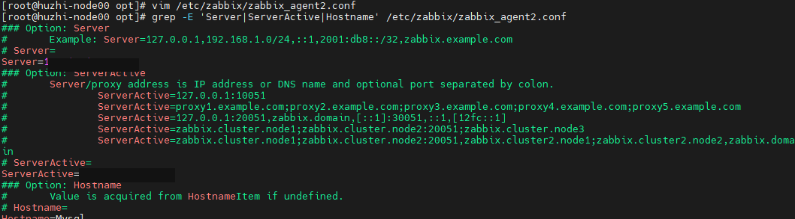
步骤 8：启动服务并设置开机自启
配置完成后启动 Agent 2，并设置为开机自启。随后检查 10050 监听端口，确认服务已正常提供监控采集能力。
systemctl enable --now zabbix-agent2ss -lntp | grep 10050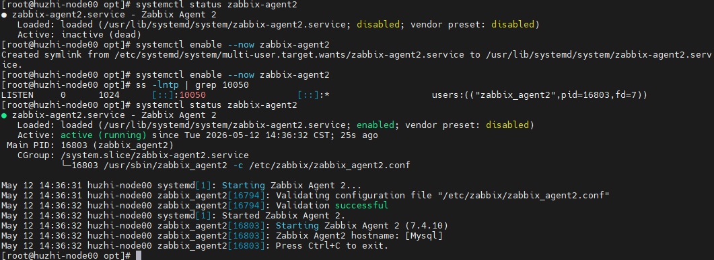
步骤 9：在 Zabbix Web 添加 Linux/MySQL 主机
在 Zabbix Web 中添加该服务器，配置接口 IP、主机组和 Linux / MySQL 相关模板。
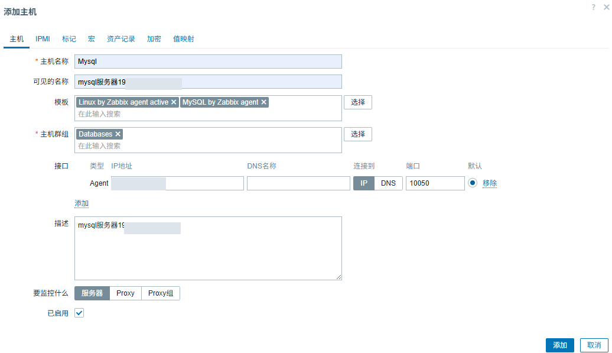
步骤 10：配置 MySQL 监控连接信息
根据模板要求配置 MySQL 账号、密码、端口和 IP 等宏变量或配置项。
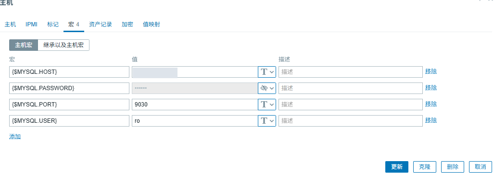
步骤 11：确认添加成功
成功标准：Zabbix 主机可用性正常，最新数据中能看到 Linux 系统指标和 MySQL 相关监控项。
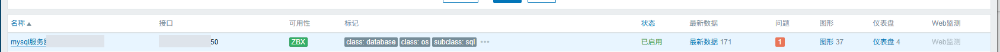
三、路由器日志主动推送到zabbix服务器
步骤 1：在路由器启用信息中心并配置日志主机
进入路由器系统视图，开启 info-center，并指定日志服务器地址。日志服务器地址为 [ZABBIX_SERVER_IP]，facility 使用 local0。
<ROUTER>system-view[ROUTER]info-center enable[ROUTER]info-center source default channel loghost log level informational debug state off trap state off[ROUTER]info-center loghost [ZABBIX_SERVER_IP] facility local0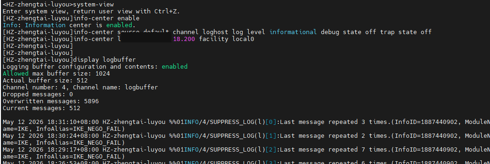
步骤 2：确认日志发送级别
当前配置表示 informational 及以上级别日志会发送到日志服务器；trap 和 debug 日志不发送。这样可以减少无效调试日志，避免日志文件增长过快。
成功标准：路由器侧日志级别配置正确，日志服务器能收到来自路由器 IP 的 syslog。
步骤 3：配置日志服务器 rsyslog 接收规则
在日志服务器上配置 rsyslog，通过 UDP 514 接收路由器日志，并按日期写入指定目录。
cat /etc/rsyslog.d/hz-router.confmodule(load="imudp")
input(type="imudp" port="514")
template(name="RouterLogFileWithDate" type="string"
string="/var/log/network/router_[ROUTER_IP]-%$YEAR%-%$MONTH%-%$DAY%.log")
template(name="RouterLogWithLocalTime" type="string"
string="%timegenerated:::date-rfc3339% %msg%\n")
if ($fromhost-ip == "[ROUTER_IP]") then {
action(type="omfile"
dynaFile="RouterLogFileWithDate"
template="RouterLogWithLocalTime"
)
stop
}
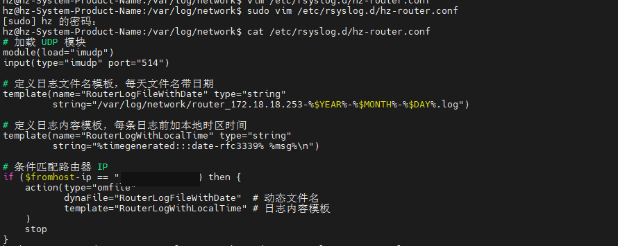
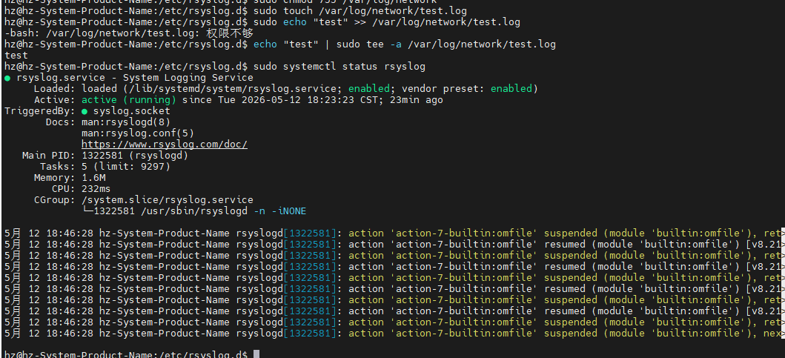
步骤 4：配置日志目录和权限
确认 /var/log/network 目录存在，并将目录所属组调整为 syslog 用户可写。配置文件权限按现场要求设置，本次记录为 757。
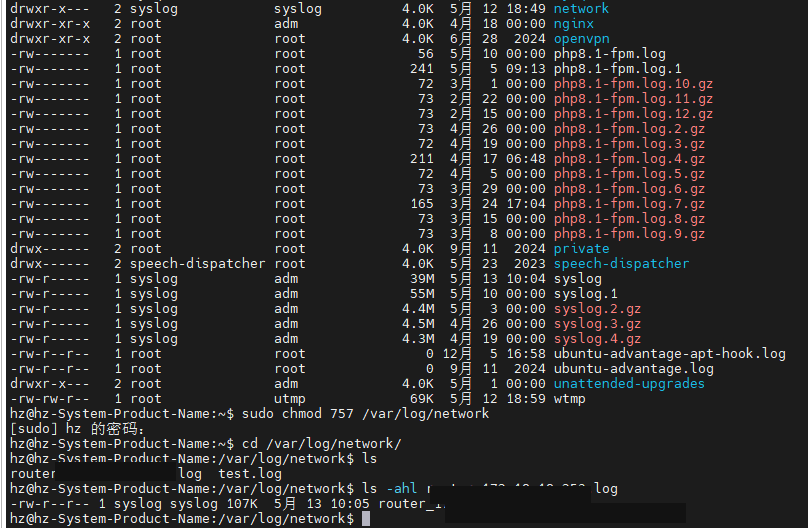
步骤 5：在路由器侧执行测试命令
通过 ping 等操作触发路由器产生日志，用于验证日志是否能主动推送到日志服务器。
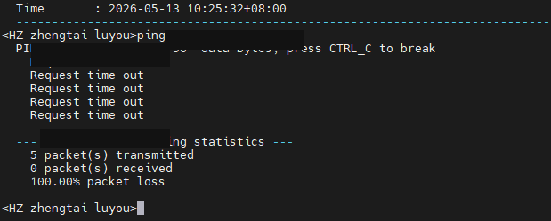
步骤 6：验证日志写入结果
在日志服务器检查 /var/log/network 下是否生成对应日期的路由器日志文件，并确认文件中存在最新日志内容。
成功标准：日志文件持续写入，时间、来源 IP 和日志内容。
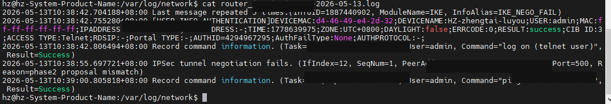
步骤 7：配置日志定时删除
配置 定时任务，避免路由器日志长期累积导致磁盘空间被占满。建议根据日志量设置按天或按大小切割，并保留指定天数。
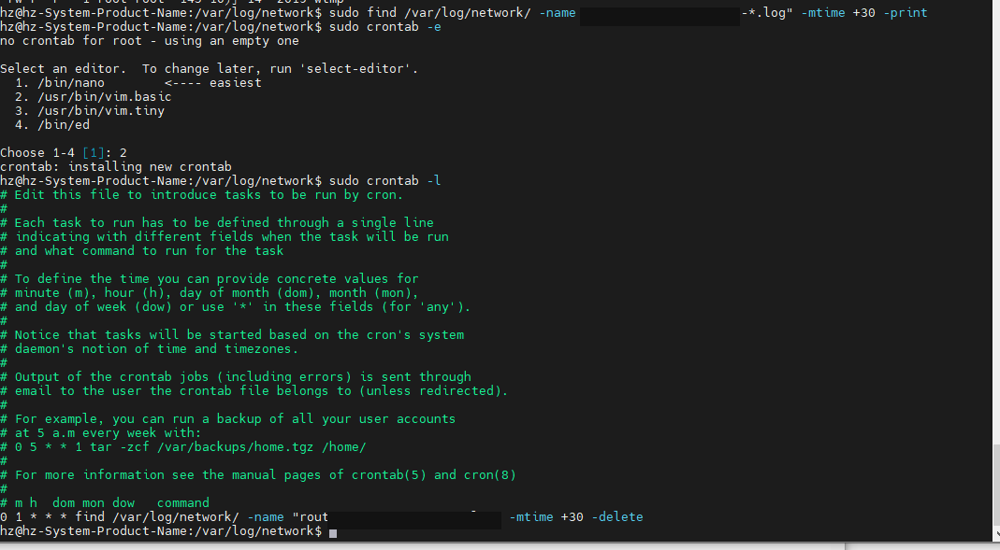
步骤 8：完成检查
日志获取完成。最终验收标准：路由器能主动推送日志，日志服务器能按日期落盘，日志轮转策略生效，且 Zabbix 监控设备添加后能正常采集数据。